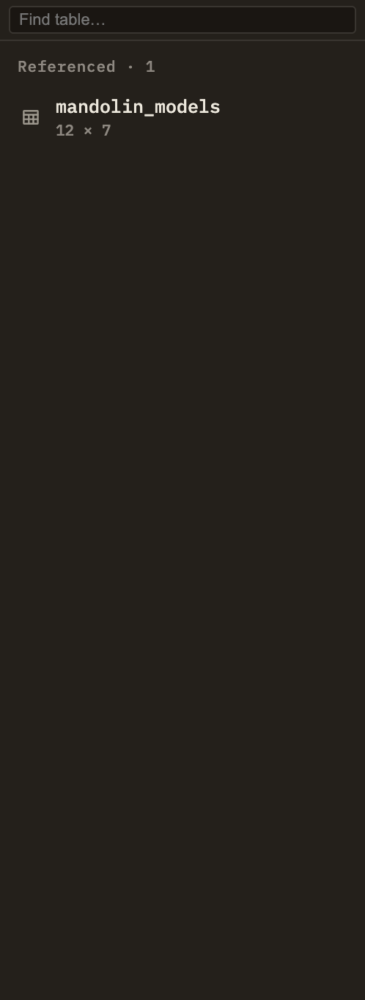

Docs/Right sidebar/Tables
Tables
When a note contains a query against your data, this panel lists the tables that query relies on and tells you, at a glance, which of them are available. Click a table to open it in a fresh query tab and see all of its rows.
What's in the list
The panel looks through the current note for data queries and gathers the names of every table those queries read from. Each distinct name gets its own row, listed alphabetically, along with whether it's available to query.
Use the search box at the top to filter the list by name. If the note doesn't query any data, the panel simply reads "No tables referenced."

This panel and the left sidebar
The left sidebar's Tables panel lists every data table in your whole project, so you can browse and query all of them. This panel is narrower and note-focused: it shows only the tables the current note's queries depend on, and flags any that are missing. In short, the left sidebar answers "what data do I have?" while this one answers "does this note's queries have what they need?"
You add a table by dropping a data file into your project — Minerva picks it up automatically, and it then becomes available everywhere you can query.